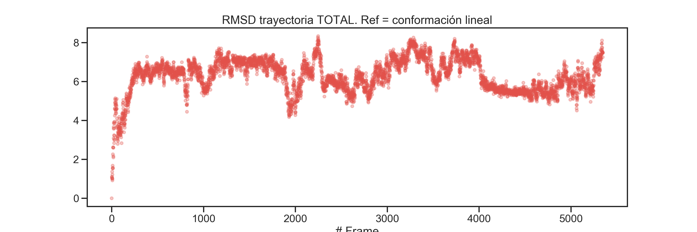
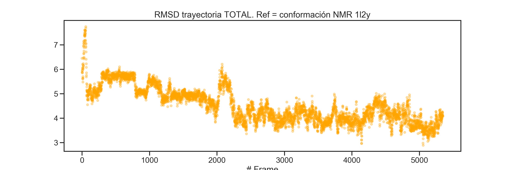
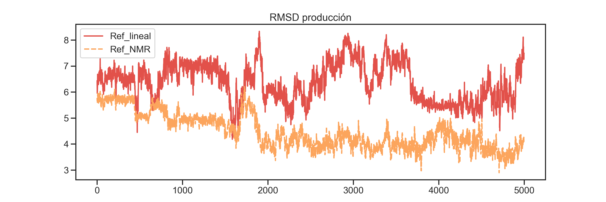
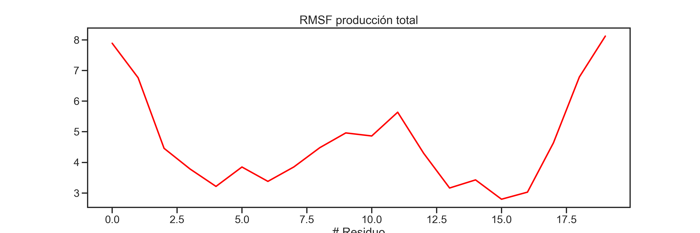
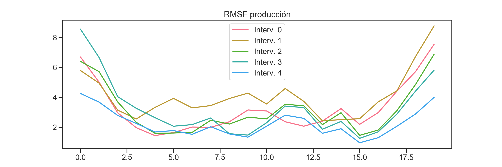

Bien, ahora podemos comenzar con el análisis de la trayectoria. Si bien, en general debemos enfocarnos en la fase de producción, para este ejemplo comenzaremos observando la evolución conformacional de la proteína a través de todas las fases de la trayectoria. Comenzamos cargando las librerías y archivos necesarios:
import pytraj as pyt
# cargamos el archivo de topología seleccionando sólo
# los primeros 20 residuos
f_topology = 'dm_sources_1L2Y/4-run_dm_2/tc5b_wb.psf'
top_prot_psf = pyt.load_topology(f_topology)[':1-20']
# Cargamos la trayectoria total de la dinámica, que guardamos
# en la sección anterior
name_file_full_traj = 'dm_sources_1L2Y/5-traj_analysis/tc5b_PROT_FULL_TRAJ.dcd'
full_traj = pyt.load(filename = name_file_full_traj,
top = top_prot_psf)
full_traj## pytraj.Trajectory, 5348 frames:
## Size: 0.036339 (GB)
## <Topology: 304 atoms, 20 residues, 1 mols, non-PBC>
## Ahora procederemos a calcular el rmsd de todos los frames de la trayectoria con respecto a una estructura de referencia, que en este caso será la estructura lineal de la proteína; correspondiente al archivo tc5b_wb.pdb.
# Cargamos la restructura lineal/inicial
init_struc = pyt.load(
filename = 'dm_sources_1L2Y/2-solvatar_wt/tc5b_wb.pdb',
top = 'dm_sources_1L2Y/2-solvatar_wt/tc5b_wb.psf', mask = ':1-20')Ahora calculamos el RMSD de toda la trayectoria usando lineal_strc como estructura de referencia:
# Cálculo del RMSD de la trayectoria total
# tomando como referencia la estructura inicial (lineal)
rmsd_full_REF_lineal = pyt.rmsd(traj = full_traj,
mask = ':4-17,@CA',
ref = init_struc)Para graficar el RMSD importamos las librerías matplotlib y seaborn y establecemos algunos parámetros por default para las gráficas.
# Importamos las librerías y parámetros para generar las gráficas
from matplotlib import pyplot as plt
import seaborn as sns
import pylab
sns.set( context = 'talk', style = 'ticks', palette = "Spectral")
pylab.rcParams['figure.figsize'] = (15, 5)Ahora generamos la gráfica de la trayectoria total:
# Creamos la figura del RMSD de la trayectoria total
plt.scatter( x = range(full_traj.n_frames),
y = rmsd_full_REF_lineal, s = 20, alpha = 0.3 )
plt.title("RMSD trayectoria TOTAL. Ref = conformación lineal")
plt.xlabel("# Frame")
plt.show()
Como es de esperarse, conforme el tiempo de simulación avanza hay un aumento en el RMSD de cada frame con respecto a la conformación inicial.
Ahora bien, para un análisis más interesante usaremos como referencia la estructura por NMR de la proteína, con el objetivo de saber si, a lo largo de la simulación, las estructura de la proteína se aproxima a la estructura experimental.
Para ello cargamos la estructura NMR de la proteína.
# Cargamos la estructura NMR
nmr_strc = pyt.load(filename = 'dm_sources_1L2Y/5-traj_analysis/1l2y_Hs.pdb',
top = 'dm_sources_1L2Y/5-traj_analysis/1l2y_Hs.psf')Calculamos el RMSD de la trayectoria usando como referencia a nmr_strc. Seguido de ello, generamos la gráfica.
plt.scatter( x = range(full_traj.n_frames), y = rmsd_full_REF_nmr,
s = 20, alpha = 0.3, c='orange' )
plt.title("RMSD trayectoria TOTAL. Ref = conformación NMR 1l2y")
plt.xlabel("# Frame")
plt.show()
Como ves, al principio de la simulación la conformación inicial y la estructura por NMR son muy distintas (entre 6 a 8 A), sin embargo, a lo largo de la dinámica y sobre todo en la producción, la conformación de la porteína tiende a ser más parecida a la estructura NMR.
Finalmente, visualicemos únicamente la fase de producción con ambas referencias:
import pandas as pd
# Creamos una tabla con pandas
# Dado que la producción corresponde a los últimos 5000 frames,
# usamos el slicing [-5000:] para extraer esos últimos 5000 datos
rmsd_prod = pd.DataFrame({"Ref_lineal": rmsd_full_REF_lineal[-5000:],
"Ref_NMR": rmsd_full_REF_nmr[-5000:]})
# Sólo por variar, vamos a usar seaborn para generar el gráfico:
ax = sns.lineplot(data = rmsd_prod)
ax.set_title("RMSD producción")
Vamos a finalizar este análisis evaluando el RMSF de la proteína a lo largo de la fase de producción. Carguemos primero dicha trayectoria (Aunque bien podriamos usar los últimos frames del objeto full_traj).
f_prod = 'dm_sources_1L2Y/5-traj_analysis/tc5b_PROT_PROD.dcd'
prod_traj = pyt.load(filename = f_prod, top = top_prot_psf)¿Es full_traj[:-5000] igual a prod_traj?
Es decir, ¿los últimos 5000 frames del objeto full_traj son iguales a todos frames de prod_traj?
## pytraj.Trajectory, 5000 frames:
## Size: 0.033975 (GB)
## <Topology: 304 atoms, 20 residues, 1 mols, non-PBC>
## ## pytraj.Trajectory, 5000 frames:
## Size: 0.033975 (GB)
## <Topology: 304 atoms, 20 residues, 1 mols, non-PBC>
## ## FalseSi bien ambos objetos, , tienen la misma información, python nos dice que prod_traj == full_traj[-5000:] son distintos (False). Esto se debe a que las variables por referencia prod_traj y full_traj apuntan a objetos distintos en memoria, pero esto no significa que ambos objetos puedan tener información similar. Esto es importante y lo debemos de tener en cuenta al momento de querer copiar o manipular secciones de trayectorias. Finálicemos este paréntesis con el siguiente código:
prod_traj_NO_copia = prod_traj # Apuntan al mismo objeto
prod_traj_copia = prod_traj.copy() # Apuntan a diferentes objetos## True## FalseAhora volvamos al ejercicio para proceder a superponer toda la trayectoria a un frame promedio.
# Obtenemos el frame promedio
avg_prod_frame = pyt.mean_structure(traj = prod_traj)
# Y superponemos la trayectoria a dicho frame
prod_traj.superpose(ref = avg_prod_frame, mask = ':3-18@CA')## pytraj.Trajectory, 5000 frames:
## Size: 0.033975 (GB)
## <Topology: 304 atoms, 20 residues, 1 mols, non-PBC>
## Ahora calculamos el RMSF de toda la producción:
rmsf_prod_traj = pyt.rmsf( prod_traj, mask = '@CA' )
# Graficamos
plt.plot( rmsf_prod_traj.T[1], c = 'red')
plt.title("RMSF producción total")
plt.xlabel("# Residuo")
plt.show()
PAra terminar esta sección, un análisis interesante sería ver cómo el RMSF de la proteína va cambiando tomando ciertos intervalos de la producción.
# Ahora calculamos el RMSF a diferentes intervalos de la producción
num_interv = 5
interv_size = int(prod_traj.n_frames / num_interv)
df_rmsf = pd.DataFrame(
{F'Interv. {i}': pyt.rmsf( prod_traj[i*interv_size : (i+1)*interv_size],
mask = '@CA').T[1] for i in range(num_interv)} )Graficamos usando seaborn.
sns.set_palette("husl")
ax = sns.lineplot(data = df_rmsf, dashes = False)
ax.set_title("RMSF producción")
En general, podremos observar que hacia la última parte de la trayectoria, el backbone de la proteína tiende a ser más estable. Continuaremos con más análisis de la trayectoria en la siguiente sección.